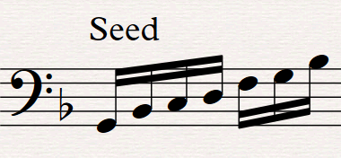

A mathematical analysis of Frederic Rzewski's Coming Together
This is the starting point of the piece, or the "seed". Its consists of 7 notes ascending the G minor pentatonic scale.
From this, let's create the pattern A, by first taking the first note of the seed, then the first 2 notes, then the first 3 notes etc. until we get all 7 notes.

Let's notice the process we've just done could have being done differently.
Instead of starting with one note and then adding notes, we've could have started with the whole pattern add then substract notes.
We've could also have started with the last note of the seed as the first note of the pattern, and then add notes left of it.
Finally, we could have chosen to play the seed from right to left instead of left to right.
Because we have 3 different choices between 2 options, we can create \(2^3=8\) different patterns.
So, for the pattern A, we chose to:
Pattern A:
1) Start with one note and then add notes.
2) Start with the note at the extreme left and then add notes left of it.
3) Play the seed from left to right.
Pattern B:
1) Start with the whole seed and then substract notes.
2) Substract notes from the right.
3) Play the seed from left to right.

Pattern C:
1) Start with one note and then add notes.
2) Start with the note at the extreme left and then add notes left of it.
3) Play the seed from right to left.

Pattern D:
1) Start with the whole seed and then substract notes.
2) Substract notes from the left.
3) Play the seed from right to left.

Pattern E:
1) Start with one note and then add notes.
2) Start with the note at the extreme right and then add notes left of it.
3) Play the seed from left to right.

Pattern F:
1) Start with the whole seed and then substract notes.
2) Substract notes from the left.
3) Play the seed from left to right.

Pattern G:
1) Start with one note and then add notes.
2) Start with the note at the extreme right and the add notes left of it.
3) Play the seed from right to left.

Pattern H:
1) Start with the whole seed and then substract notes.
2) Substract notes from the right.
3) Play the seed from right to left.

We can calculate the number of notes in each pattern with Gauss's formula: \(1+2+3+4+5+6+7\)\(= \sum_{i=1}^{7}i=7*8/2=28\)
We notice that Gauss's formula implies that the sum of numbers from 1 to 7, i.e. 28, has to be a multiple of 7. This will come useful later.
Now, all of this will become pretty meta. We will reiterate the same process on the 8 patterns to create the 8 sections of the piece.
Let's take the pattern A. We first take the first note of the pattern, then the 2 first notes, then the 3 first notes etc. until we get all 28 notes of the pattern. Doing so, we get the following result (this is just the beginning):

Once the pattern is full, we then substract notes form it, starting from the left. Once there is no notes left, the section is over.
So each section will have \(1+2+3+4+...+27+28+27+\)\(...+3+2+1 = \)\(\sum_{i=1}^{28}i+\sum_{i=1}^{27}i\) \(= 28*29/2+27*28/2\)\(= 406+378=784 \) notes.
We notice that \(784=28^2\). This is a specific case of the general assumption that \(\sum_{i=1}^{n}i+\sum_{i=1}^{n-1}i=n^2\)
Indead, \(\sum_{i=1}^{n}i+\sum_{i=1}^{n-1}i\)\(=n(n+1)/2+(n-1)n/2\)\(= n/2((n+1)+(n-1)) \)\(= n/2*2n = n^2\)
Because \(784 = 28^2 = 4^2*7^2 = 16*49\), we can divide each section into 49 measures of 16 notes each. Because \(49=7^2\), we can separate these 49 measures into 7 groups of 7 measures.
So, the piece has 8 sections of 49 measures each, so \(8*49 = 392\) measures, and \(8*7=56\) groups of 7 measures.
Let's now add lyrics to the piece. They will be separated into 8 groups of 7 lines each. The vocalist must say one line for each measure.
Group A: I THINK THE COMBINATION OF AGE AND A GREATER COMING TOGETHER IS RESPONSIBLE FOR THE SPEED OF THE PASSING TIME ________ Group B: IT’S SIX MONTH NOW AND I CAN TELL YOU TRUTHFULLY FEW PERIODS IN MY LIFE HAVE PASSED SO QUICKLY ________ Group C: I AM IN EXCELLENT PHYSICAL AND EMOTIONAL HEALTH ________ Group D: THERE DOUBTLESS SUBTLE SURPRISES AHEAD BUT I FEEL SECURE AND READY ________ Group E: AS LOVERS WILL CONTRAST THEIR EMOTIONS IN TIMES OF CRISIS, SO AM I DEALING WITH MY ENVIRONMENT, ________ Group F: IN THE INDIFFERENT BRUTALITY, THE INCESSANT NOISE, THE EXPERIMENTAL CHEMISTRY OF FOOD, THE RAVINGS OF LOST HYSTERICAL MEN, I CAN ACT WITH CLARITY AND MEANING ________ Group G: I AM DELIBERATE SOMETIMES EVEN CALCULATING SELDOM EMPLOYING HISTRIONICS EXCEPT AS A TEST OF THE REACTIONS OF OTHERS. ________ Group H: I READ MUCH, EXERCISE, TALK TO GUARD AND INMATE, FEELING FOR THE INEVITABLE DIRECTION OF MY LIFEAs said previously, the piece has 56 groups in total. Because \(56=2*28\) and \(28=1+2+3+4+5+6+7\), we can again use incrementation and decrementation as follows:
A AB ABC ABCD ABCDE ABCDEF ABCDEFG BCDEFGH CDEFGH DEFGH EFGH FGH GH HRegrouping 7 consecutive groups into one section, we get the following:
Section A: AABABCA Section B: BCDABCD Section C: EABCDEF Section D: ABCDEFG Section E: BCDEFGH Section F: CDEFGHD Section G: EFGHEFG Section H: HFGHGHHThat's what I call clever!